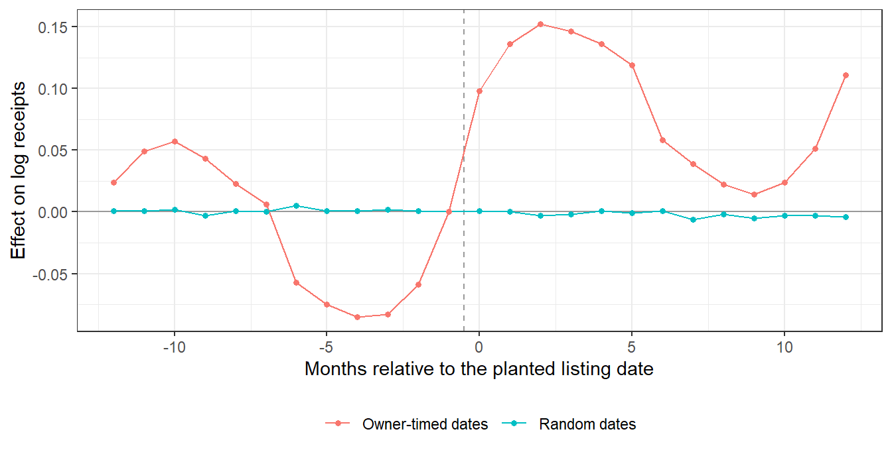

flowchart TB
subgraph FIRM["Firm-level"]
WRDS["WRDS / Compustat<br/>financials, R&D, advertising"]
end
subgraph HH["Household-level"]
CE["Consumer Expenditure Survey<br/>elicited expenditure (panel + diary)"]
end
subgraph IND["Individual / keyword-level"]
GT["Google Trends<br/>relative search interest"]
BD["Baidu Index<br/>search volume"]
YT["YouTube<br/>views, comments, engagement"]
NAME["Name-based inference<br/>gender / age / nationality"]
end
WRDS -->|"revealed (accounting)"| OUT["Research design:<br/>estimand vs. observable"]
CE -->|"elicited (survey)"| OUT
GT -->|"revealed (behavior)"| OUT
BD -->|"revealed (behavior)"| OUT
YT -->|"revealed (behavior)"| OUT
NAME -->|"inferred (model)"| OUT
33 Data
Empirical marketing research is only as credible as the data behind it, and the data a researcher can obtain increasingly determine which questions are even askable. This chapter is a working guide to acquiring the raw material of marketing science—firm financials, advertising and engagement metrics, household expenditure, and the digital traces of consumer attention—and, just as importantly, to understanding what each source actually measures. Acquisition is never neutral: every dataset embeds a sampling frame, a measurement model, and a set of selection mechanisms that propagate into every downstream estimate. A panel that surveys 6,000 households quarterly, an index that rescales search volume to its own maximum, and an API that silently throttles after 1,400 calls each impose structure on what the analyst can learn.
Controversy: the spreadsheet that moved fiscal policy
Before the acquisition mechanics, one cautionary case about what happens between acquiring data and reporting a result. It comes from economics, it is the most consequential arithmetic error in the modern social sciences, and it was found by a graduate student doing a homework assignment.
2010 — the finding. Reinhart and Rogoff (2010) report that countries with public debt above 90 percent of GDP experience markedly lower average growth. The 90 percent threshold enters political debate almost immediately and is cited in support of austerity programmes in several countries.
2013 — the replication. Herndon, Ash, and Pollin (2013) obtain the original spreadsheet and attempt to reproduce the result. They report three separate problems: selective exclusion of country-year observations, an unconventional weighting of country averages, and a spreadsheet formula error that omitted several countries from the average entirely. Correcting them, the sharp discontinuity at 90 percent does not survive; a weaker negative association remains.
What this case is actually about. Not fraud, and not sophisticated econometrics. The error was in a cell range. It persisted for three years in one of the most heavily cited empirical results of its decade, through peer review and through enormous public scrutiny, because nobody else had the file. It was found the first time someone did.
That is the argument for the practices this chapter and Section 77.7 insist on, stated as a consequence rather than a principle: version-controlled acquisition scripts, a raw layer that is never edited in place, transformations expressed as code rather than as manual steps, and the whole chain posted with the paper. A pipeline built that way makes this class of error findable by you before publication and by others afterwards. A spreadsheet does not.
We organize the material by source, but the through-line is measurement. For each source we state, as precisely as the source allows, the estimand—the population quantity of interest—and the observable the source actually delivers, because the gap between the two is where most empirical mistakes live. Search interest is not search volume; a relative index is not an absolute count; a name-based demographic prediction is a posterior probability, not a fact. Treating these distinctions casually is how plausible pipelines produce biased coefficients.
The chapter is also deliberately reproducible. Connection recipes, query patterns, and rescaling algorithms appear as runnable code so that a reader can move from “this dataset exists” to “I have it in a tidy frame” without reverse engineering undocumented APIs. Where a third-party platform’s own documentation is the authoritative reference—rate limits, OAuth scopes, schema—we point to the mechanism rather than reproduce ephemeral details. Throughout, the goal is the one stated in the style guide: intuition first, then the formal object, then code that runs.
Figure 33.1 situates the sources covered here along the two dimensions that matter most for research design: the unit of observation (firm, household, or individual consumer) and whether the data are behavioral (revealed in actions) or survey-elicited (reported by respondents).
33.1 Firm Financial Data: WRDS
Most marketing-finance research (Chapter 26) and a large share of strategy work rest on standardized firm financials. Wharton Research Data Services (WRDS) is the dominant academic gateway to these: it federates Compustat (accounting fundamentals), CRSP (security prices and returns), I/B/E/S (analyst forecasts), and dozens of other libraries behind a single SQL interface. For the marketing researcher the attraction is concrete. Advertising expense (xad) and research-and-development expense (xrd) in Compustat’s fundamentals-annual file (funda) are the canonical proxies for a firm’s marketing and innovation intensity, and they join cleanly to market-based outcomes such as Tobin’s \(q\) or abnormal returns used throughout Chapter 26.
The connection is a standard PostgreSQL session; WRDS exposes its warehouse over the wire, so the same DBI idioms used for any relational database apply. Credentials should never be hard-coded—read them from the environment so that the source file is safe to share.
Code
library(RPostgres)
library(tidyverse)
wrds <- dbConnect(
Postgres(),
host = "wrds-pgdata.wharton.upenn.edu",
port = 9737,
dbname = "wrds",
sslmode = "require",
user = Sys.getenv("wrds_user"),
pass = Sys.getenv("wrds_pass")
)The warehouse is self-describing through the information_schema, which is the disciplined way to discover what is available rather than guessing table names. Three nested queries answer the three questions a new user has: which libraries (schemas) exist, which tables live in a chosen library, and which columns a chosen table holds.
Code
# Libraries (schemas) available to your subscription
dbGetQuery(wrds, "
select distinct table_schema
from information_schema.tables
order by table_schema")
# Tables inside one library
dbGetQuery(wrds, "
select distinct table_name
from information_schema.columns
where table_schema = 'comp_na_daily_all'
order by table_name")
# Columns inside one table
dbGetQuery(wrds, "
select column_name
from information_schema.columns
where table_schema = 'comp_na_daily_all'
and table_name = 'funda'
order by column_name")A representative extraction pulls advertising and R&D for a decade, then enriches each firm-year with its industry classification by joining on the firm identifier gvkey. Pushing the filters (fyear, non-null xad/xrd) into the WHERE clause rather than filtering in R keeps the transfer small; this matters when funda runs to millions of rows.
Code
fin <- dbGetQuery(wrds, "
select gvkey, fyear, xad, xrd
from comp_na_daily_all.funda
where fyear between 2000 and 2010
and xad is not null
and xrd is not null") |>
distinct()
industry <- dbGetQuery(wrds, "
select gvkey, gind, gsubind, naics, sic
from comp_na_daily_all.names")
panel <- fin |>
left_join(industry, by = "gvkey")
head(panel)Two cautions recur in practice and shape identification downstream. First, xad is reported advertising; under accounting rules many firms expense marketing without breaking it out, so missingness is non-random—it correlates with firm size, industry, and disclosure regime. Treating is null as “no advertising” rather than “not separately disclosed” silently selects the sample on a variable correlated with the outcome, the textbook recipe for selection bias. Second, funda ships in multiple formats (consolidated vs. parent-only, standardized vs. restated) keyed by the indfmt, datafmt, popsrc, and consol flags; the conventional screen for North American industrial firms is indfmt='INDL' and datafmt='STD' and popsrc='D' and consol='C', and omitting it double-counts firm-years. Neither caution is exotic, but both are invisible until an estimate looks wrong.
Note
Beyond WRDS, the Consumer Expenditure Survey (below) and commercial scanner panels (e.g., IRI, Nielsen) cover demand-side behavior that firm financials cannot. The general principle—match the unit of observation to the estimand—is developed in Chapter 39.
33.2 Local Document Stores: MongoDB
Not all marketing data are relational. Social-media posts, scraped reviews, and API responses arrive as nested, schema-flexible JSON, and a document database such as MongoDB stores them without forcing a rectangular schema up front. When ingesting at scale the first operational question is simply where the data physically live, which the running server reports through an administrative command issued in the mongo shell:
db.adminCommand("getCmdLineOpts")The returned document includes the storage.dbPath, the on-disk location of the data files—useful for capacity planning, backups, and confirming that a large ingest is writing where you expect. The broader point is architectural: document stores trade the relational guarantees of WRDS-style sources (a fixed schema, referential integrity, declarative joins) for flexibility on write. That trade is right for heterogeneous, evolving web data and wrong for the tidy panels demanded by most econometric estimators, which is why a common pipeline lands raw captures in MongoDB and projects a flattened, analysis-ready frame into R or a relational store before modeling.
33.3 Search Interest: Google Trends
Aggregate search behavior is among the most useful behavioral signals in marketing because it is timely, granular, and a leading indicator of attention. The motivating regularity is that public interest and its institutional reflections move together but on different clocks: online search volume and news reporting are strongly correlated, whereas academic publishing lags public interest because of the delay inherent in peer review and publication (Nghiem et al. 2016). Read structurally, news media act as a conductor between the research community and the public, and online search is the most immediate barometer of the public’s side of that exchange.
33.3.1 What Google Trends Measures
Google Trends does not report search volume. It reports a relative search interest index, and the distinction is the single most important thing to understand about the source. For a keyword \(k\), a geography \(g\), and a chosen time window, let \(v_{k,t}\) be the underlying volume of queries for \(k\) in period \(t\) (itself a sampled, privacy-filtered quantity). Trends returns the rescaled series
\[ I_{k,t} \;=\; 100 \times \frac{v_{k,t}}{\displaystyle\max_{s \in W} v_{k,s}}, \tag{33.1}\]
where \(W\) is the requested window. Three consequences follow directly from Equation 33.1 and trip up the unwary.
First, the index is window-dependent. The denominator is the maximum within the requested window, so the same keyword queried over two different windows generally returns different index values for the overlapping dates—the series is not anchored to any fixed scale. Second, the index is co-normalized across the keywords in a single request: when several keywords are submitted together they share one denominator (the global maximum across all of them), which is exactly what makes cross-keyword comparison valid within a request and invalid across separate requests. Third, the data are sampled, so repeated identical queries return slightly different indices; for stable estimates one averages several draws.
The window also dictates the granularity Google will return, which is fixed by the length of the requested span:
| Data granularity | Window length |
|---|---|
| Hourly | Last 7 days |
| Daily | Less than 9 months |
| Weekly | 9 months to 5 years |
| Monthly | Longer than 5 years |
A first pass pulls weekly relative interest for two brands over a multi-year window. The gtrendsR package wraps the public endpoint; interest_over_time holds the index series.
Because Equation 33.1 produces a relative, sampled series, plotting it raw shows both signal and seasonal noise. A smoother separates the trend component from within-year seasonality without committing to a parametric seasonal model.
Code
library(ggplot2)
ggplot(time_trend, aes(x = date, y = hits, group = keyword, colour = keyword)) +
geom_line(alpha = 0.4) +
geom_smooth(span = 0.5, se = FALSE) +
labs(x = "Time", y = "Relative interest (weekly)",
title = "Google search interest", colour = NULL) +
theme_bw() +
theme(legend.position = "bottom")33.3.2 Reconstructing a Long Daily Series
The granularity rule in Table 33.1 creates a real problem: researchers often need daily resolution over multi-year spans, but a multi-year request returns only weekly (or monthly) data. The fix exploits the co-normalization property of Equation 33.1. Two reconstruction strategies exist, and they differ in how they reconcile the high-frequency and low-frequency series.
The scaling (overlapping) method is the more reliable of the two. It queries short windows at daily resolution, queries the full span at lower resolution to obtain period weights, and rescales the daily pieces so that each month’s daily indices are multiplied by that month’s relative weight. Formally, let \(d_{k,t}\) be the daily index obtained from a short within-window query covering month \(m(t)\), and let \(w_{k,m}\) be the month-\(m\) weight derived from the long-window query (the month’s aggregate index divided by the maximum monthly aggregate). The reconstructed daily series is the product
\[ \hat{v}_{k,t} \;=\; d_{k,t} \times w_{k,m(t)}, \tag{33.2}\]
which restores a common scale across months while preserving within-month daily shape. The concatenation (normalization) method instead stitches one-month daily queries end to end and normalizes them against the weekly series; empirical comparisons favor the scaling method, which is why Equation 33.2 is the recommended estimator.1 This reconstruction underlies published applications that require daily search data over long horizons (Risteski and Davcev 2014), and related approaches to extracting daily volume are documented elsewhere (Y. Liu et al. 2019).
The function below implements Equation 33.2 end to end: it pulls a single aggregated query to derive monthly multipliers mult, loops over months to pull daily data, and joins the two to produce reconstructed daily estimates est_hits. Note the rate-limit budget of roughly 1,400 requests per 4 hours; a long reconstruction must respect it or the loop will start returning empty frames.
Code
library(gtrendsR)
library(tidyverse)
library(lubridate)
get_daily_gtrend <- function(keyword = c("7eleven", "3M"),
geo = "US",
from = "2013-01-01",
to = "2013-02-15") {
# Disallow a 'to' date in the current (incomplete) month
if (ymd(to) >= floor_date(Sys.Date(), "month")) {
to <- floor_date(ymd(to), "month") - days(1)
if (to < from) stop("`to` date in the current month is not allowed")
}
# Long query -> monthly multipliers w_{k,m}
aggregated <- gtrends(keyword = keyword, geo = geo, time = paste(from, to))
if (is.null(aggregated$interest_over_time)) {
message("No data in Google Trends for this query.")
return(invisible(NULL))
}
mult_m <- aggregated$interest_over_time |>
mutate(hits = as.integer(ifelse(hits == "<1", "0", hits))) |>
group_by(month = floor_date(date, "month"), keyword) |>
summarise(hits = sum(hits), .groups = "drop") |>
mutate(ym = format(month, "%Y-%m"), mult = hits / max(hits)) |>
select(month, ym, keyword, mult)
# Per-month daily queries -> d_{k,t}
windows <- tibble(
s = seq(ymd(from), ymd(to), by = "month"),
e = seq(ymd(from), ymd(to), by = "month") + months(1) - days(1)
)
raw_daily <- map2_dfr(windows$s, windows$e, function(s, e) {
curr <- gtrends(keyword, geo = geo, time = paste(s, e))
if (is.null(curr$interest_over_time)) return(tibble())
curr$interest_over_time
})
trend_d <- raw_daily |>
transmute(date, keyword,
ym = format(date, "%Y-%m"),
hits = as.integer(ifelse(hits == "<1", "0", hits)))
# Reconstruct: est_hits = d_{k,t} * w_{k,m(t)} (eq-gtrends-scaling)
trend_d |>
left_join(mult_m, by = c("ym", "keyword")) |>
mutate(est_hits = hits * mult, date = as.Date(date)) |>
select(date, keyword, est_hits)
}
daily_trend <- get_daily_gtrend(
keyword = c("7eleven", "3M"), geo = "US",
from = "2013-01-01", to = "2013-02-01")
head(daily_trend)33.3.3 Absolute Volume
When the application genuinely requires absolute counts rather than the relative index of Equation 33.1—for example, to size a market rather than track its trajectory—the relative-interest endpoint is the wrong source. Google publishes a separate top-terms dataset through BigQuery that exposes absolute search figures, and that warehouse, not the Trends index, is the appropriate input for level estimates.
33.4 Search Volume in China: Baidu Index
Outside the markets Google serves, the analogous behavioral signal comes from the dominant local search engine. In China that is Baidu, and the Baidu Index plays the role Google Trends plays elsewhere. Because Baidu exposes no comparable public API for bulk extraction, researchers have built crawlers to recover its search-volume series; P. J. Liu et al. (2019) document a Java-based spider for exactly this purpose. The same measurement caveats apply—an index is a rescaled, sampled proxy for latent interest, not a count—so the estimand-versus-observable discipline of Section 33.3 carries over directly.
33.5 Video Engagement: YouTube
Video is now a primary advertising and engagement channel, and YouTube exposes rich behavioral data—views, likes, comments, and watch metrics—at the video, playlist, and channel level. Two access paths exist, and the choice between them is a governance decision rather than a convenience one.
The first path is the public Data API, which serves publicly visible statistics for any video or channel using a simple API key. The second is the Analytics and Reporting APIs, which serve owner-private metrics (impressions, audience retention, revenue) and therefore require OAuth authorization by the channel or content owner that owns the requested data. Table 33.2 contrasts the two; the operative rule is that anything a viewer cannot see requires the owner’s delegated consent.
| Dimension | Data API (key) | Analytics / Reporting (OAuth) |
|---|---|---|
| Auth | API key | OAuth 2.0, owner-delegated |
| Scope | Public statistics | Owner-private metrics |
| Typical fields | views, likes, comments | impressions, retention, revenue |
| Who can call | anyone with a key | the channel/content owner |
| Use case | competitive/market scans | first-party performance analytics |
33.5.1 OAuth Path via tuber
The tuber package wraps the authenticated endpoints. Authorization is a one-time OAuth handshake with credentials provisioned in the Google Cloud console; thereafter the session token authorizes calls for video statistics, details, captions, search, and comment threads.
Code
library(tuber)
# Provision app_id / app_secret in the Google Cloud console, then:
yt_oauth(app_id = "YOUR_APP_ID", app_secret = "YOUR_APP_SECRET")
get_stats(video_id = "N708P-A45D0") # public statistics
get_video_details(video_id = "N708P-A45D0") # snippet metadata
get_captions(video_id = "yJXTXN4xrI8") # caption track
yt_search(term = "test") # search the corpus
get_comment_threads(c(video_id = "N708P-A45D0")) # top-level comments
get_all_comments(video_id = "a-UQz7fqR3w") # comments + repliesA common research task is to assemble a panel of every video in a channel. YouTube models a channel’s uploads as a hidden playlist, so the recipe is: read the channel’s relatedPlaylists$uploads id, page through that playlist’s items to collect video ids, then map the statistics call over the ids and bind the results into a frame.
Code
chan <- list_channel_resources(
filter = c(channel_id = "UCT5Cx1l4IS3wHkJXNyuj4TA"),
part = "contentDetails")
uploads_id <- chan$items[[1]]$contentDetails$relatedPlaylists$uploads
vids <- get_playlist_items(filter = c(playlist_id = uploads_id))
vid_ids <- as.vector(vids$contentDetails.videoId)
stats_df <- do.call(rbind, lapply(vid_ids, function(id) data.frame(get_stats(id))))
head(stats_df)33.5.2 Key Path via the Data API
When only public statistics are needed, the raw REST endpoints are lighter than an OAuth session. The pattern is a small set of helper functions that build the request URL, parse the JSON, and return a tidy frame—one helper per resource type (video, playlist, channel).
Code
library(jsonlite)
library(dplyr)
API_key <- Sys.getenv("YOUTUBE_API_KEY") # never hard-code keys
video_stats <- function(video_id, key) {
url <- paste0("https://www.googleapis.com/youtube/v3/videos",
"?part=snippet,statistics&id=", video_id, "&key=", key)
res <- fromJSON(url)
data.frame(
name = res$items$snippet$channelTitle,
res$items$statistics,
title = res$items$snippet$title,
date = res$items$snippet$publishedAt
)
}
channel_stats <- function(channel_id, key) {
url <- paste0("https://www.googleapis.com/youtube/v3/channels",
"?part=snippet,contentDetails,statistics&id=", channel_id,
"&key=", key)
res <- fromJSON(url)
data.frame(
name = res$items$snippet$title,
res$items$statistics,
uploads = res$items$contentDetails$relatedPlaylists$uploads
)
}These frames feed directly into comparative visualizations—total channel views, or the time path of comments and likes across competing channels—using the ggplot2 idioms already shown for Google Trends. Because the engagement counts (viewCount, commentCount) arrive as character strings, they must be coerced to numeric before plotting.
Warning
A requests-and-BeautifulSoup scraper that pages through search-result HTML can retrieve video ids without an API key, but scraping rendered pages is brittle, violates many terms of service, and breaks whenever the front-end markup changes. Prefer the official endpoints; treat HTML scraping as a last resort for prototyping, never production.
33.6 Household Expenditure: The Consumer Expenditure Survey
When the research question concerns what households buy—budget shares, category demand, the income elasticity of a product class—the canonical U.S. source is the Consumer Expenditure (CE) Survey administered by the Bureau of Labor Statistics. Its sampling design is worth understanding in detail, because the survey’s structure dictates which estimands it can support and at what frequency.
The CE’s unit of observation is the consumer unit, defined as a single person or a group of persons who live together and share responsibility for most major expenditures.
A consumer unit is a single person, or a group of persons who live together and who share responsibilities for most major expenditures.
Within each unit, the reference person is the first individual named when the respondent answers, “Who is responsible for owning or renting this home?”—a convention that fixes the household head deterministically and makes cross-survey linkage well defined.
The survey is not one instrument but two complementary ones, a design choice that follows directly from a measurement trade-off between recall accuracy and coverage. Large, infrequent purchases are remembered well but happen rarely; small, frequent purchases are forgotten quickly but dominate the budget in count. No single instrument measures both well, so the CE splits them:
- The Interview Survey captures big-ticket and recurring expenditures, plus global estimates for some categories. It is a rotating-panel survey: each consumer unit is interviewed once every three months for four quarters, with roughly 6,000 units in the sample each quarter. The panel structure supports within-unit change over the year, but the four-quarter cap means it cannot follow a household across years.
- The Diary Survey captures small-ticket, frequently purchased items that recall-based interviewing would miss. It is independent of the interview component and collects roughly 14,000 diaries from participating families each year.
Published tabulations come in several time formats: annual tables run January–December (available since 1984) and, in a fiscal variant, July–June (since 2013); two-year tables span January of year one through December of year two (since 1986). Beyond the standard tables, BLS produces experimental research tabulations—covering, for instance, income detail or generational groups such as millennials and Gen X—available on request. The practical implication for design is that the rotating four-quarter panel is the right frame for within-year, within-household questions, while cross-year dynamics require pooling repeated cross-sections rather than following the same units.
33.7 Inferring Demographics from Names
A recurring need in marketing research is to attach demographic attributes—gender, age, nationality—to records that carry only a name, as when a researcher has a roster of customers, reviewers, or social-media authors but no self-reported demographics. A family of services performs exactly this inference: gender from genderize.io, age from agify.io, and nationality from nationalize.io. Each returns, for a queried name, a predicted attribute together with a confidence.
It is essential to read these outputs as what they are: posterior probabilities from a name-frequency classifier, not ground-truth labels. The underlying logic is a simple Bayesian classifier. Let \(n\) be an observed name and \(g\) a candidate attribute value (say, gender). The services effectively report
\[ \Pr(g \mid n) \;=\; \frac{\Pr(n \mid g)\,\Pr(g)}{\displaystyle\sum_{g'} \Pr(n \mid g')\,\Pr(g')}, \tag{33.3}\]
estimated from large registries of names tagged with the attribute, where \(\Pr(n \mid g)\) is the frequency of name \(n\) among individuals with value \(g\) and \(\Pr(g)\) the base rate of \(g\) in the reference population. Three properties of Equation 33.3 govern responsible use. The prediction inherits the reference population’s composition: a classifier trained predominantly on one region’s registries mispredicts systematically for names common elsewhere, so the base rate \(\Pr(g)\) is not universal. The reported confidence is the posterior itself, so unisex or rare names yield diffuse, low-confidence posteriors that should not be hardened into deterministic labels. And because the inferred attribute is a generated regressor, using it as a covariate in a downstream model imports classification error into that model—the resulting attenuation and the need to propagate the first-stage uncertainty are treated in Chapter 39. Used with those caveats, name-based inference is a cheap way to recover coarse demographic structure; used naively, it manufactures measurement error correlated with name origin.
33.7.1 Scaling the Inference: An Open Firm-Level Diversity Panel
The classifier in Equation 33.3 is usually run on a few thousand names for one study. Wang and Zhang (2026) run it on a population and publish the result. The Organizational Diversity Database covers 466,626 U.S. firms from 2003 to 2023, built by collecting 570 million publicly available LinkedIn profiles—including more than 220 million profile photos—inferring each user’s race and gender from the photo and the name, and aggregating to the firm–occupation–year cell. Each cell reports gender composition, racial composition, and, unusually for a demographic panel, promotion and turnover rates by race and gender. The data are released publicly through a registration portal, with a data dictionary and a methodology document.
For a marketing researcher the appeal is that it supplies a firm-level covariate that was previously available only for the small set of firms filing EEO-1 reports or voluntarily disclosing. Workforce composition can now be joined to the WRDS financials of Section 33.1, to brand and advertising measures, or to the marketing–finance outcomes of Chapter 26, which makes questions such as whether a firm’s diversity claims are matched by its salesforce, or whether composition moves before or after a public commitment, into panel questions rather than case studies.
The cautions are the ones this section has already stated, and aggregation does not retire them. Adding a photo to the name gives the classifier a second signal, but the output is still a posterior, not a label, and a share computed from posteriors is a sum of classification probabilities rather than a headcount. If the classifier’s error rate varies by group—the standard finding for both name-frequency and face-based inference—then the error in a firm’s measured composition is correlated with the composition being measured, which is the one failure mode averaging cannot fix. The promotion and turnover rates are more exposed still, because a rate by race is a ratio of two classified quantities and inherits error from both. A second issue is specific to the source: LinkedIn is a self-selected roster whose coverage varies by occupation, firm size, region, and year, rising steeply across the sample period, so a measured composition is the composition of a firm’s LinkedIn-visible workforce, and a time trend in composition partly tracks a time trend in who joined the platform. Occupation and year fixed effects absorb the common part of that drift; they do not absorb differential coverage growth across groups.
None of this argues against using the database—it argues for using it as Section 33.9 prescribes. Name the estimand (the firm’s actual workforce composition), name the observable (a probabilistic classification of its platform-visible workforce), and carry the gap as a modeling problem: report composition as an interval where the methodology document supplies validation rates, prefer within-firm changes to cross-firm levels, and treat any coefficient on inferred composition as a generated-regressor estimate that needs its first-stage uncertainty propagated (Chapter 39). (The published paper is paywalled; this account rests on its abstract and the public data portal.)
33.8 Establishment Revenue from Tax Records: Texas Mixed Beverage Receipts
Revenue at the level of a single store, bar, or restaurant is the outcome marketing researchers most want and can least often get. Firms guard it, and the platforms that see transactions rarely release them. Some tax records are an exception. Texas taxes every permit holder that sells mixed beverages on its gross receipts from liquor, wine, beer, and cover charges, and the Comptroller of Public Accounts publishes each location’s monthly filing on the state’s open-data portal as the Mixed Beverage Gross Receipts dataset (data.texas.gov, identifier naix-2893). In October 2026 the file ran from January 2007 to September 2026 and held about 3.8 million location-months. It is free, needs no registration, and serves through a standard Socrata API.
Luca, Nagaraj, and Subramani (2026) use this file to estimate what a Yelp listing does to a bar’s or restaurant’s revenue, with matched listing dates from Yelp. Their argument is analyzed in Section 76.6.4. What makes the file valuable in their design applies to many others. It is close to a census of a whole industry, so non-adopters are observed alongside adopters. It is monthly. It comes from a source with no stake in the platform being studied. Its blind spots are just as specific. It records alcohol, not food. The working paper behind the article cites survey evidence that alcohol is roughly 20–30% of a restaurant bill and about 70% at a bar (Luca, Nagaraj, and Subramani 2022). Venues without a mixed-beverage permit, such as most cafés and fast-food outlets, are absent altogether.
Code
# One county, 2007-2017, straight from the open-data API (no key needed).
# Travis County (Austin) is county code 227; Harris is 101, Dallas 57.
url <- paste0("https://data.texas.gov/resource/naix-2893.csv?",
"$where=location_county='227'%20AND%20obligation_end_date_yyyymmdd<'2018-01-01'",
"&$limit=200000&$order=:id")
d <- data.table::fread(url, colClasses = list(character = c("taxpayer_number",
"location_number")))33.8.1 What is an establishment?
The file has no field called “establishment”, and the first decision is which identifier to treat as one. Table 33.3 counts the candidates in the Travis County extract (Austin) for 2007–2017, which contains 118,333 location-months.
Code
txmb_ids <- data.frame(
Identifier = c("Taxpayer number", "Taxpayer number x location number",
"Name x address string", "TABC permit number", "Street address"),
Distinct = c(1791, 2171, 2099, 2770, 1392),
`What it follows` = c("The legal entity that owes the tax",
"One venue under one owner",
"A venue as customers see it",
"A license, which can change while the venue continues",
"A site, across every business that occupies it"),
check.names = FALSE)
knitr::kable(txmb_ids, format.args = list(big.mark = ","))| Identifier | Distinct | What it follows |
|---|---|---|
| Taxpayer number | 1,791 | The legal entity that owes the tax |
| Taxpayer number x location number | 2,171 | One venue under one owner |
| Name x address string | 2,099 | A venue as customers see it |
| TABC permit number | 2,770 | A license, which can change while the venue continues |
| Street address | 1,392 | A site, across every business that occupies it |
The counts disagree because the identifiers follow different things. A taxpayer can run several locations, so taxpayer numbers undercount venues. Permit numbers overcount them: 36% of taxpayer-location pairs file under more than one permit number over the eleven years. Addresses outlive owners: 31% of street addresses host more than one taxpayer, and one hosted twelve. The taxpayer-location pair and the name-address string nearly agree, and the gap between them is ownership changes in which a new owner keeps the old name.
No choice is right in general. The rule is to pick the identifier that tracks whatever the treatment attaches to. A Yelp listing is attached to a name at an address. It survives a change of owner who keeps the name, and it does not transfer to a new restaurant at the same site. That is why the working paper builds its own location IDs from names and addresses rather than taking taxpayer numbers. A study of a permit policy would choose differently, and so would a study of a site, such as a new transit stop.
33.8.2 Cleaning the panel
The working paper documents its cleaning in an appendix, and the same rules apply to any use of the file. Sum or deduplicate multiple filings in a month. Trim the runs of zero receipts that precede opening and follow closing, since a permit holder files zero while not yet operating. Drop venues with zero months or missing months in the middle of their lives, because a seasonal closure or renovation produces exactly the revenue jump a treatment would. Check each venue’s first filing against its responsibility begin date, the date it became liable for the tax, which tells you whether the venue opened during the panel or before it. In the Travis extract, after trimming, 179 of 2,021 taxpayer-location pairs had interior zero months and 21 had gaps. Requiring at least two years of filings leaves 1,207 venues, 93,490 venue-months, and median monthly receipts of $37,732.
Linking the panel to a platform is the step where most of the error enters. The paper used Yelp’s internal matcher on names and coordinates. An outside researcher would use fuzzy name and address matching against scraped or licensed listing data. Whatever the matcher, audit it in both directions on a random sample of matched and unmatched venues. Then work out which group each error type contaminates: a false match puts an untreated venue among the treated, and a missed match puts a treated venue among the controls.
33.8.3 Stress-testing a listing design on the public panel
Yelp’s listing dates are proprietary, so the paper’s estimate cannot be reproduced from public data. The revenue side is public, though, and that supports a useful exercise. Plant listing dates with known properties into the real revenue paths of real venues, then check what each estimator recovers. Real paths carry the seasonality, ramp-ups, slow declines, and one-off shocks that a simulated panel leaves out. The exercise uses the cleaned Travis panel (1,207 venues) and a lifecycle-trimmed version (945 venues) that drops each venue’s first year of life and, for venues that closed, its last year. In each of 50 draws per cell, a random 60% of venues are “listed” and the rest serve as never-listed controls. Each draw is estimated three ways. The first is two-way fixed effects. The second is the two-stage imputation estimator of Gardner (2022), the estimator the paper uses, through the did2s package (Butts and Gardner 2022). The third adds venue-age bins to its first stage. All three use venue and month fixed effects. The four ways a listing date can arrive are:
- Random: a uniformly random month at least six months into the venue’s life, with no effect. This is the placebo.
- Owner-timed: the owner lists just before an upswing they can see coming, such as a renovation or a new chef. The date is drawn from the 20% of months with the largest rise from the previous six months to the next six. There is no effect.
- Bulk: a single date, July 2010, for every listed venue open six months either side, with a true effect of 0.05 log points, as in the paper’s natural experiment.
- Growing: random dates, with an effect that grows by 0.01 a year as the platform’s reach grows, which is the heterogeneity the paper cites to justify its estimator.
Code
txmb_stress <- data.frame(
`Listing date` = rep(c("Random (placebo)", "Owner-timed", "Bulk, July 2010", "Growing effect"), 2),
Panel = rep(c("All months", "Lifecycle-trimmed"), each = 4),
Truth = c(0, 0, 0.050, 0.073, 0, 0, 0.050, 0.074),
TWFE = c(-0.007, 0.085, 0.046, 0.063, -0.005, 0.071, 0.051, 0.063),
`Two-stage` = c(0.004, 0.120, 0.074, 0.080, -0.001, 0.085, 0.059, 0.071),
`Two-stage + age` = c(-0.010, 0.107, 0.069, 0.066, -0.004, 0.086, 0.058, 0.069),
check.names = FALSE)
knitr::kable(txmb_stress, digits = 3)| Listing date | Panel | Truth | TWFE | Two-stage | Two-stage + age |
|---|---|---|---|---|---|
| Random (placebo) | All months | 0.000 | -0.007 | 0.004 | -0.010 |
| Owner-timed | All months | 0.000 | 0.085 | 0.120 | 0.107 |
| Bulk, July 2010 | All months | 0.050 | 0.046 | 0.074 | 0.069 |
| Growing effect | All months | 0.073 | 0.063 | 0.080 | 0.066 |
| Random (placebo) | Lifecycle-trimmed | 0.000 | -0.005 | -0.001 | -0.004 |
| Owner-timed | Lifecycle-trimmed | 0.000 | 0.071 | 0.085 | 0.086 |
| Bulk, July 2010 | Lifecycle-trimmed | 0.050 | 0.051 | 0.059 | 0.058 |
| Growing effect | Lifecycle-trimmed | 0.074 | 0.063 | 0.071 | 0.069 |
Table 33.4 yields four lessons, each tied to a step in the paper’s argument.
First, the pipeline itself is sound: with random dates and no effect, the estimates are within about a point of zero. Second, the owner-timing threat is not hypothetical. An owner who lists before an upswing produces a “listing effect” of 0.085 to 0.120 out of nothing. That is larger than the paper’s full-sample estimate and close to its bulk-sample one. No estimator removes it, because it is selection on the timing, not a weighting problem. This is the threat the paper’s ladder of super-adders and bulk adds exists to answer (Section 76.6.4).
Third, the imputation estimator learns each listed venue’s level from its months before listing, so anything unusual about early life leaks into the effect. In this panel, venues earn about 9–12% more in each of their next twelve years than in their first. On the untrimmed panel, the bulk design therefore reports 0.074 for a true 0.05. Dropping the first and last year of life cuts the bias to under a point. Adding age bins to the first stage helps much less. The paper drops venues listed within three months of opening. These numbers suggest the ramp-up here lasts closer to a year, which matters most for venues listed early in life. Fourth, when the effect grows with the platform’s reach, two-way fixed effects understate it by about 15% (0.063 against a truth of 0.074), while the two-stage estimator is close. That is the paper’s stated reason for using it.
Can an event study catch the owner who saw the upswing coming? Figure 33.2 plots the two-stage event-study coefficients on the trimmed panel, averaged over 20 draws. In this panel the answer is yes. The months that precede a rise are mostly months that follow a fall, so owner-timed listings leave a dip of 6–8% in the leads. The spurious effect fades by about nine months and then climbs again toward month twelve. That annual cycle most likely means much of the “upswing” an owner sees coming is the venue’s own seasonal pattern, such as a campus bar’s autumn, which month fixed effects shared by all venues do not remove. The paper reports the opposite pattern: flat leads and a jump that persists. That pattern is the evidence against owner timing that an event study can supply. It is not a complete defense. An upswing that arrives out of a flat revenue path, such as a renovation that permanently lifts revenue, would leave flat leads and a lasting effect too. Only a listing date chosen by someone other than the owner rules that case out.
Code
library(ggplot2)
k <- c(-12:-2, 0:12)
ev <- data.frame(
k = rep(c(k, -1), 2),
b = c(c(0.001, 0.001, 0.002, -0.003, 0.001, 0.000, 0.005, 0.001, 0.001, 0.002, 0.001,
0.001, 0.000, -0.003, -0.002, 0.001, -0.001, 0.001, -0.006, -0.002, -0.005,
-0.003, -0.003, -0.004), 0,
c(0.024, 0.049, 0.057, 0.043, 0.023, 0.006, -0.057, -0.075, -0.085, -0.083,
-0.059, 0.098, 0.136, 0.152, 0.146, 0.136, 0.119, 0.058, 0.039, 0.022, 0.014,
0.024, 0.051, 0.111), 0),
dates = rep(c("Random dates", "Owner-timed dates"), each = 25))
ggplot(ev, aes(k, b, colour = dates)) +
geom_hline(yintercept = 0, colour = "grey60") +
geom_vline(xintercept = -0.5, linetype = "dashed", colour = "grey60") +
geom_line() + geom_point(size = 1.2) +
labs(x = "Months relative to the planted listing date",
y = "Effect on log receipts", colour = NULL) +
theme_bw() + theme(legend.position = "bottom")
The complete script below downloads the extract, builds the panel, and reproduces every number in this section. It takes about ten minutes on a laptop. Swap the county code to run it on Houston, Dallas, or any other county in the state.
Code
# Texas Mixed Beverage Gross Receipts: identifier anatomy, panel construction,
# and an estimator check on the real revenue panel (Travis County, 2007-2017).
library(data.table); library(fixest); library(did2s)
args <- commandArgs(TRUE); dir <- if (length(args)) args[1] else "."
f <- file.path(dir, "travis.csv")
if (!file.exists(f)) download.file(paste0(
"https://data.texas.gov/resource/naix-2893.csv?$where=location_county='227'",
"%20AND%20obligation_end_date_yyyymmdd<'2018-01-01'&$limit=200000&$order=:id"), f)
d <- fread(f, colClasses = list(character = c("taxpayer_number", "location_number")))
d[, ym := as.integer(substr(obligation_end_date_yyyymmdd, 1, 4)) * 12L +
as.integer(substr(obligation_end_date_yyyymmdd, 6, 7)) - 1L]
d[, addr := gsub("\\s+", " ", toupper(trimws(sub("\\s+(STE|SUITE|#|UNIT|BLDG).*$", "",
location_address, ignore.case = TRUE))))]
d[, est := paste(taxpayer_number, location_number, sep = "-")]
# ---- 1. Identifier anatomy ---------------------------------------------------
anat <- data.table(
unit = c("rows (establishment-months)", "taxpayer numbers", "taxpayer x location number",
"TABC permits", "name x address strings", "street addresses"),
n = c(nrow(d), uniqueN(d$taxpayer_number), uniqueN(d$est), uniqueN(d$tabc_permit_number),
uniqueN(d[, paste(location_name, location_address)]), uniqueN(d$addr)))
print(anat)
names_per_est <- d[, .(k = uniqueN(location_name)), by = est]
tp_per_addr <- d[, .(k = uniqueN(taxpayer_number)), by = addr]
perm_per_est <- d[, .(k = uniqueN(tabc_permit_number)), by = est]
cat(sprintf("est with >1 name: %.1f%%; addr with >1 taxpayer: %.1f%% (max %d); est with >1 permit: %.1f%%\n",
100 * mean(names_per_est$k > 1), 100 * mean(tp_per_addr$k > 1), max(tp_per_addr$k),
100 * mean(perm_per_est$k > 1)))
# ---- 2. Cleaning, following Appendix B of the working paper -------------------
p <- d[, .(rev = sum(total_receipts), nfil = .N), by = .(est, ym)]
cat("est-months with >1 filing:", sum(p$nfil > 1), "\n")
setorder(p, est, ym)
p[, pos := cumsum(rev > 0) > 0 & rev(cumsum(rev(rev > 0)) > 0), by = est] # trim leading/trailing zeros
p <- p[pos == TRUE]
bad <- p[, .(zero = any(rev <= 0), gap = (max(ym) - min(ym) + 1L) != .N), by = est]
cat(sprintf("after trimming: %d est; interior zero months: %d; gaps: %d\n",
nrow(bad), sum(bad$zero), sum(!bad$zero & bad$gap)))
p <- p[est %in% bad[!zero & !gap, est]]
p[, id := as.integer(factor(est))]
p[, `:=`(y = log(rev), first = min(ym), T = .N), by = id]
p <- p[T >= 24] # enough months to place an event
cat(sprintf("analysis panel: %d establishments, %d est-months, median monthly receipts $%s\n",
uniqueN(p$id), nrow(p), format(median(p$rev), big.mark = ",")))
# Opening date from the tax file itself, so lifecycle months can be removed.
beg <- d[, .(open = min(as.integer(substr(responsibility_begin_date_yyyymmdd, 1, 4)) * 12L +
as.integer(substr(responsibility_begin_date_yyyymmdd, 6, 7)) - 1L)), by = est]
p[beg, open := i.open, on = "est"]
p[, agey := pmin(pmax((ym - open) %/% 12L, 0L), 15L)] # venue age in years, top-coded
print(round(coef(feols(y ~ i(agey) | id + ym, p)), 3)) # revenue by age year vs. year 0
lastm <- 2017L * 12L + 10L # Nov 2017, the last full month
p[, close := max(ym), by = id]
trim <- p[ym >= open + 12L & (close >= lastm | ym <= close - 12L)] # drop first/last year of life
trim[, `:=`(first = min(ym), T = .N), by = id]
trim <- trim[T >= 24]
cat(sprintf("lifecycle-trimmed panel: %d establishments, %d est-months\n",
uniqueN(trim$id), nrow(trim)))
# ---- 3. Estimator check: four ways a listing date can arrive -------------------
assign_dates <- function(q, scn) {
ids <- unique(q[, .(id, first, last = first + T - 1L)]); tr <- ids[runif(.N) < 0.6]
if (scn %in% c("random", "growing")) {
tr[, g := first + 6L + floor(runif(.N) * pmax(last - first - 11L, 1L))]
} else if (scn == "owner") {
# the owner lists just before an upswing they can see coming (renovation, new chef):
# pick among the months with the largest 6-month-ahead minus 6-month-behind change
up <- q[id %in% tr$id][order(id, ym)][, {
a <- frollmean(y, 6, align = "left"); b <- shift(frollmean(y, 6), 1)
s <- a - b; ok <- which(!is.na(s)); top <- ok[s[ok] >= quantile(s[ok], 0.8)]
.(g = ym[top[sample.int(length(top), 1)]])
}, by = id]
tr <- tr[up, on = "id"]
} else if (scn == "bulk") {
G <- 2010L * 12L + 6L # July 2010, as in the paper
tr <- tr[first <= G - 6L & last >= G + 6L][, g := G]
}
q[tr, g := i.g, on = "id"]
if (scn == "bulk") q[, y := y + 0.05 * (!is.na(g) & ym >= g)]
if (scn == "growing") # effect grows with platform reach
q[!is.na(g) & ym >= g, y := y + 0.01 * (ym - 2007L * 12L) / 12]
q[, post := as.integer(!is.na(g) & ym >= g)]
q
}
truth_of <- function(q, scn) if (scn == "bulk") 0.05 else if (scn == "growing")
q[post == 1, mean(0.01 * (ym - 2007L * 12L) / 12)] else 0
ts2 <- function(q, f) unname(coef(did2s(q, yname = "y", first_stage = f,
second_stage = ~ i(post, ref = 0), treatment = "post", cluster_var = "id", verbose = FALSE))[1])
draw <- function(panel, scn) {
q <- assign_dates(copy(panel), scn)
c(truth = truth_of(q, scn), twfe = coef(feols(y ~ post | id + ym, q))[["post"]],
two_stage = ts2(q, ~ 0 | id + ym), two_stage_age = ts2(q, ~ i(agey) | id + ym))
}
set.seed(20261007); R <- 50
grid <- CJ(panel = c("raw", "trimmed"), scn = c("random", "owner", "bulk", "growing"), sorted = FALSE)
res <- rbindlist(lapply(seq_len(nrow(grid)), function(i) data.table(grid[i], # plain loop:
t(replicate(R, draw(if (grid$panel[i] == "raw") p else trim, grid$scn[i])))))) # not inside by=
fwrite(res, file.path(dir, "txmb_draws.csv"))
out <- res[, .(truth = mean(truth), twfe = mean(twfe), two_stage = mean(two_stage),
two_stage_age = mean(two_stage_age), sd = sd(two_stage)), by = .(panel, scn)]
print(out, digits = 3)
fwrite(out, file.path(dir, "txmb_results.csv"))
# ---- 4. Do pre-trends catch the owner who saw the upswing coming? --------------
es <- function(scn, R = 20) rbindlist(lapply(seq_len(R), function(r) {
q <- assign_dates(copy(trim), scn)
q[, rel := fifelse(is.na(g), Inf, pmin(pmax(ym - g, -13L), 13L))]
m <- did2s(q, yname = "y", first_stage = ~ 0 | id + ym,
second_stage = ~ i(rel, ref = c(-1, -13, 13, Inf)),
treatment = "post", cluster_var = "id", verbose = FALSE)
data.table(k = as.integer(sub("rel::", "", names(coef(m)))), b = coef(m))
}))[, .(b = mean(b)), by = k][order(k)][, scn := scn]
ev <- rbind(es("random"), es("owner"))
print(dcast(ev, k ~ scn, value.var = "b"), digits = 3)
fwrite(ev, file.path(dir, "txmb_event.csv"))33.9 Pitfalls and Identification
The sources in this chapter differ in unit, frequency, and provenance, but the threats to valid inference share a small number of structural causes. Figure 33.3 maps each common pitfall to the source where it bites hardest and to its remedy.
flowchart LR A["Non-random missingness<br/>(unreported xad in Compustat)"] --> A2["Model disclosure;<br/>do not treat NULL as zero"] B["Relative, window-dependent index<br/>(Google Trends, Baidu)"] --> B2["Rescale via overlapping<br/>method (eq-gtrends-scaling)"] C["Sampling noise in indices<br/>(Trends draws)"] --> C2["Average repeated queries"] D["Generated-regressor error<br/>(name-based demographics)"] --> D2["Propagate first-stage<br/>uncertainty"] E["Recall vs. coverage trade-off<br/>(CE survey)"] --> E2["Match instrument to estimand<br/>(interview vs. diary)"] F["Rate limits / TOS<br/>(APIs, scrapers)"] --> F2["Budget requests; prefer<br/>official endpoints"] G["Identifier is not the unit<br/>(tax records: taxpayer,<br/>permit, address)"] --> G2["Use the ID the<br/>treatment attaches to"]
The unifying discipline is the one stated at the outset: name the estimand, name the observable the source delivers, and treat the difference as a modeling problem rather than a nuisance. Reported advertising is not advertising; a relative index is not a volume; a name-based prediction is not a demographic. Each gap is tractable once it is made explicit, and ruinous when it is not.
33.10 Key Takeaways
- Match the unit of observation to the estimand. WRDS delivers firm-level financials, the CE Survey household expenditure, and search/engagement APIs individual behavioral traces; no source substitutes for another (Figure 33.1).
-
Reported is not measured. Compustat’s
xadrecords disclosed advertising; missingness is non-random and treatingNULLas zero selects the sample on a variable correlated with outcomes (Section 33.1). - A relative index is not a volume. Google Trends rescales to its window’s maximum (Equation 33.1); long daily series must be reconstructed by the overlapping-scaling method (Equation 33.2), and absolute counts require a different source entirely.
- Survey design encodes a recall–coverage trade-off. The CE splits big-ticket recall (interview panel) from frequent-purchase coverage (diary), so the right instrument depends on the category (Section 33.6).
- Name-based demographics are posteriors, not labels. They follow a Bayesian name-frequency classifier (Equation 33.3) whose error is correlated with name origin and must be propagated downstream (Section 33.7).
- Population-scale inference does not retire the caveat. The Organizational Diversity Database supplies race and gender composition, promotion, and turnover for 466,626 U.S. firms at the firm–occupation–year level, inferred from 570 million LinkedIn profiles and their photos (Wang and Zhang 2026); because classifier error varies by group and LinkedIn coverage varies by occupation and year, the measured quantity is a probabilistic classification of a platform-visible workforce (Section 33.7.1).
- Respect the platform contract. Owner-private metrics require OAuth, public ones a key (Table 33.2); honor rate limits and prefer official endpoints over brittle scrapers.
Butts, Kyle, and John Gardner. 2022. “did2s: Two-Stage Difference-in-Differences.” The R Journal 14 (3): 162–73. https://doi.org/10.32614/RJ-2022-048.
Gardner, John. 2022. “Two-Stage Differences in Differences.” https://doi.org/10.48550/arXiv.2207.05943.
Herndon, Thomas, Michael Ash, and Robert Pollin. 2013. “Does High Public Debt Consistently Stifle Economic Growth? A Critique of Reinhart and Rogoff.” Cambridge Journal of Economics 38 (2): 257–79. https://doi.org/10.1093/cje/bet075.
Liu, Peggy J., Kelly L. Haws, Karen Scherr, Joseph P. Redden, James R. Bettman, and Gavan J. Fitzsimons. 2019. “The Primacy of “What” over “How Much”: How Type and Quantity Shape Healthiness Perceptions of Food Portions.” Management Science 65 (7): 3353–81. https://doi.org/10.1287/mnsc.2018.3098.
Liu, Ying, Geng Peng, Lanyi Hu, Jichang Dong, and Qingqing Zhang. 2019. “Using Google Trends and Baidu Index to Analyze the Impacts of Disaster Events on Company Stock Prices.” Industrial Management & Data Systems 120 (2): 350–65. https://doi.org/10.1108/imds-03-2019-0190.
Luca, Michael, Abhishek Nagaraj, and Gauri Subramani. 2022. “Getting on the Map: The Impact of Online Listings on Business Performance.” NBER Working Paper 30810. National Bureau of Economic Research. https://doi.org/10.3386/w30810.
———. 2026. “Getting on the Map: The Impact of Online Listings on Business Performance.” Management Science 72 (10): 9199–9214. https://doi.org/10.1287/mnsc.2024.04716.
Nghiem, Le T. P., Sarah K. Papworth, Felix K. S. Lim, and Luis R. Carrasco. 2016. “Analysis of the Capacity of Google Trends to Measure Interest in Conservation Topics and the Role of Online News.” Edited by Zhong-Ke Gao. PLOS ONE 11 (3): e0152802. https://doi.org/10.1371/journal.pone.0152802.
Reinhart, Carmen M., and Kenneth S. Rogoff. 2010. “Growth in a Time of Debt.” American Economic Review 100 (2): 573–78. https://doi.org/10.1257/aer.100.2.573.
Risteski, Dimche, and Danco Davcev. 2014. “Can We Use Daily Internet Search Query Data to Improve Predicting Power of EGARCH Models for Financial Time Series Volatility?” International Conference on Computer Science and Information Systems (ICSIS’2014) Oct 17-18, 2014 Dubai (UAE), October. https://doi.org/10.15242/iie.e1014066.
Wang, Simeng, and Letian Zhang. 2026. “Organizational Diversity Database: An Open Data Set on Firm Racial and Gender Composition.” Strategy Science. https://doi.org/10.1287/stsc.2025.0393.
The overlapping-scaling procedure follows the approach popularized by Alex Dyachenko; the concatenation variant mirrors the
dailydataroutine in thepytrendslibrary. Both predate—and are wrapped by—the function below.↩︎